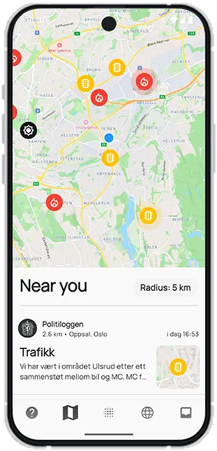

For en litt tryggere hverdag.
Med Sivil holder du deg oppdatert på hendelser i ditt nærområde. Politimeldinger, trafikk og brukerrapporter – alt samlet for å gjøre hverdagen litt tryggere.

Med Sivil holder du deg oppdatert på hendelser i ditt nærområde. Politimeldinger, trafikk og brukerrapporter – alt samlet for å gjøre hverdagen litt tryggere.